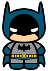

CURRICULUM VITAE DE BRUCE WAYNE
DATOS PERSONALES
-
Nombre completo: Bruce Wayne
-
Fecha de nacimiento: 01/05/1939
-
Lugar de nacimiento: Gotham City
FORMACION ACÁDEMICA
-
1956-1961: Universidad de espantapájaros
Licenciatura en areonáutica
-
1952-1956: Secundario Gotham
Bachiller con especialización en trucos
EXPERIENCIA LABORAL
-
1975-1985: Desocupado
Sin trabajo porque se me rompio el batimovil
-
1965-1975: Cazavillanos y demás chusma
Atrapé a Gatubela a Joker a Victor Fries lo dejé porque se me congeló la capa
-
1962-1965: Aprendiz de superhéroes
Hice pasantías con Superman. Opté por usar máscara porque no pude aprender a peinarme el rulo